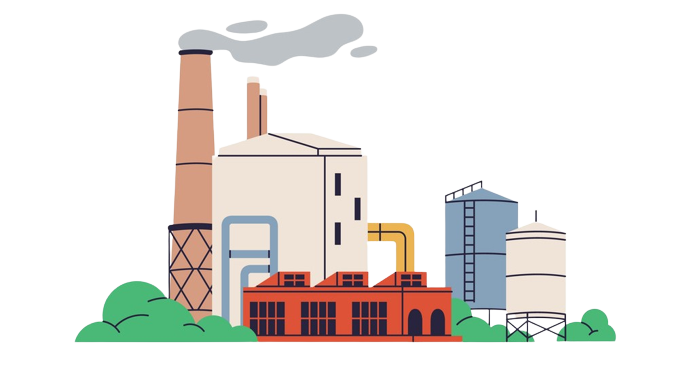

| Region | Industry | Gas_Type | 2010 | 2011 | 2012 | 2013 | 2014 | 2015 | 2016 | 2017 | 2018 | 2019 | 2020 | 2021 |
|---|---|---|---|---|---|---|---|---|---|---|---|---|---|---|
| Africa | Agriculture, Forestry and Fishing | Carbon dioxide | 5.4833463 | 5.5616066 | 6.1613613 | 6.6801772 | 7.1181525 | 7.2013206 | 7.926669 | 8.5981767 | 8.8856280 | 9.1935734 | 9.519654 | 9.8698585 |
| Africa | Agriculture, Forestry and Fishing | Methane | 458.6501622 | 466.2201694 | 482.4106594 | 490.5887757 | 499.8454744 | 509.6203497 | 528.344281 | 533.7788599 | 548.6560375 | 563.2569212 | 574.852827 | 584.9614950 |
| Africa | Agriculture, Forestry and Fishing | Nitrous oxide | 222.6657074 | 226.3593335 | 232.8761280 | 239.1607104 | 242.8260545 | 247.1781244 | 254.281329 | 259.1741123 | 262.7217172 | 269.4591494 | 274.965308 | 280.8890908 |
| Africa | Construction | Carbon dioxide | 93.5123237 | 90.6855296 | 91.1809929 | 92.3579625 | 92.5021260 | 90.0738003 | 90.658470 | 93.9879512 | 95.6132203 | 96.6909356 | 87.940823 | 93.3010371 |
| Africa | Construction | Methane | 80.2142733 | 77.5623159 | 82.3408858 | 78.1490071 | 77.8151530 | 77.6607676 | 75.467303 | 78.1366855 | 79.9999150 | 81.2865166 | 75.599927 | 76.3786539 |
| Africa | Construction | Nitrous oxide | 0.7712887 | 0.7736284 | 0.7959222 | 0.8283857 | 0.7897217 | 0.7891306 | 0.799116 | 0.7653146 | 0.7799213 | 0.7963517 | 0.768515 | 0.7787723 |
Greenhouse Gas Emissions Trends
Who is the highest contributor?
As concerns about greenhouse gas emissions continue to grow globally, it has become increasingly important to deepen our understanding about the main sources and driving forces behind these emissions. Understanding these factors is crucial in the process of making informed decisions and the development of effective strategies to address the urgent climate crisis.
Our analysis, covering the years from 2010 to 2021, aims to reveal the contributing factors behind greenhouse gas emissions, which are intricately linked to climate change. Our data-driven approach provides us with the insights necessary to make informed decisions and implement comprehensive strategies to address this ongoing environmental challenge, ultimately guiding us towards a more sustainable future.
Let us first watch a video to have a greater understanding about the Greenhouse Effect.
Data
Now that we have a proper understanding about the Greenhouse effect, we will be analyzing Greenhouse Gas Emissions Trends based on the Industries, Regions and Gas Types shown in the table below:
| Industries |
|
| Regions |
|
| Gas Types |
|
Analysis
In our analysis of greenhouse gas emissions from 2010 to 2021, we will be using various data visualization techniques to help us uncover the story hidden within the data. These methods will give us a comprehensive view of emissions trends, relationships, and key contributors.
All emission data are expressed in million metric tons of CO2 equivalent as the standardized unit of measurement.
Before anything can be done, lets clean the dataset to make it suitable for use!
#read the csv file
data <- read.csv("Annual_Greenhouse_Gas_(GHG)_Air_Emissions_Accounts.csv")
#we are only using the columns: Country, Industry, Gas_Type, F2010, F2011, F2012, F2013, F2014, F2015, F2016, F2017, F2018, F2019, F2020, F2021
#create a new data frame with only the needed columns of suitable names
new_names <- c("Region", "Industry", "Gas_Type", 2010, 2011, 2012, 2013, 2014, 2015, 2016, 2017, 2018, 2019, 2020, 2021)
new_data <- data %>%
filter(Country %in% c("Africa", "Americas", "Asia", "Europe", "Oceania")) %>%
filter(Industry %in% c("Manufacturing", "Electricity, Gas, Steam and Air Conditioning Supply", "Transportation and Storage", "Agriculture, Forestry and Fishing", "Construction")) %>%
filter(Gas_Type %in% c("Carbon dioxide", "Fluorinated gases", "Methane", "Nitrous oxide")) %>%
select(Country, Industry, Gas_Type, F2010, F2011, F2012, F2013, F2014, F2015, F2016, F2017, F2018, F2019, F2020, F2021) %>%
setNames(new_names)Line Graphs:
We will be using line graphs to show how greenhouse gas emissions have changed over time (2010-2021) for each of the following categories: Industry, Region, and Gas Types.
1. Industry against Time
The plot shown below clearly illustrates that the Electricity, Gas, Steam and Air Conditioning Supply industry has the highest total emission rates compared to other industries.
industries <- unique(new_data$Industry)
years <- 2010:2021
#create empty data frame to store the results
combined_data <- data.frame(Year = years)
#loop through each industry and add the data to combined_data
for (industry in industries) {
#calculate the sums for each year
results <- sapply(years, function(year) {
#filter data for the specified year and industry
filtered_data <- new_data %>%
filter(Industry == industry) %>%
summarise(Year = as.integer(year), Total_Emissions = sum(get(as.character(year)))
)
})
result <- t(results)
emissions <- as.numeric(result[,"Total_Emissions"])
combined_data[industry] <- emissions
}
combined_data_longer <- combined_data %>%
pivot_longer(cols = -Year, names_to = "Industry", values_to = "Emissions")
#create the plot for industries
p1 <- ggplot(combined_data_longer, aes(x = Year, y = Emissions, color = Industry)) +
geom_line() +
labs(x = "Year", y = "Emissions (Industry)",
color = "Industry",
title="Total Emissions Over the Years by Industry",
caption = "Units: Million metric tons of CO2 equivalent")+
theme(plot.background = element_rect(fill = "#F4F1E8"), # Set the background color of the plot
legend.background = element_rect(fill = "#F4F1E8")) # Set the background color of the legend
plotly_chart1 <- ggplotly(p1)
plotly_chart1Should you wish to explore the individual plots, feel free to select the industry of your choice!
Emissions Over the Years by Industry
2. Region against Time
The plot shown below clearly illustrates that Asia exhibits notably higher emission rates in comparison to other regions.
#plot all gas types in 1 graph
regions <- unique(new_data$Region)
years <- 2010:2021
#create empty data frame to store the results
combined_data <- data.frame(Year = years)
#loop through each region and add the data to combined_data
for (region in regions) {
#calculate the sums for each year
results <- sapply(years, function(year) {
#filter the data for the specified year and region
filtered_data <- new_data %>%
filter(Region == region) %>%
summarise(Year = as.integer(year), Total_Emissions = sum(get(as.character(year)))
)
})
result <- t(results)
emissions <- as.numeric(result[,"Total_Emissions"])
combined_data[region] <- emissions
}
combined_data_longer <- combined_data %>%
pivot_longer(cols = -Year, names_to = "Region", values_to = "Emissions")
#create the plot
p2 <- ggplot(combined_data_longer, aes(x = Year, y = Emissions, color = Region)) +
geom_line() +
labs(x = "Year", y = "Emissions (Region)",
color = "Region",
title = "Total Emissions Over the Years by Region",
caption = "Units: Million metric tons of CO2 equivalent")+
theme(plot.background = element_rect(fill = "#F4F1E8"), # Set the background color of the plot
legend.background = element_rect(fill = "#F4F1E8")) # Set the background color of the legend
plotly_chart2 <- ggplotly(p2)
plotly_chart2Should you wish to explore the individual plots, feel free to select the region of your choice!
Emissions Over the Years by Region
3. Gas Type against Time
The plot shown below clearly illustrates that Carbon Dioxide exhibits notably higher emission rates in comparison to other greenhouse gases.
gas_types <- c("Carbon dioxide","Fluorinated gases","Methane","Nitrous oxide")
years <- 2010:2021
#create empty data frame to store the results
combined_data <- data.frame(Year = years)
#loop through each gas type and add the data to combined_data
for (gas_type in gas_types) {
#calculate the sums for each year
results <- sapply(years, function(year) {
#filter the data for the specified year and gas type
filtered_data <- new_data %>%
filter(Gas_Type == gas_type) %>%
summarise(Year = as.integer(year), Total_Emissions = sum(get(as.character(year)))
)
})
result <- t(results)
emissions <- as.numeric(result[,"Total_Emissions"])
combined_data[gas_type] <- emissions
}
combined_data_longer <- combined_data %>%
pivot_longer(cols = -Year, names_to = "Gas_Type", values_to = "Emissions")
#create the plot
p3 <- ggplot(combined_data_longer, aes(x = Year, y = Emissions, color = Gas_Type)) +
geom_line() +
labs(x = "Year", y = "Emissions (Gas Type)",
color = "Gas Type",
title = "Total Emissions Over the Years by Gas Type",
caption = "Units: Million metric tons of CO2 equivalent")+
theme(plot.background = element_rect(fill = "#F4F1E8"), # Set the background color of the plot
legend.background = element_rect(fill = "#F4F1E8")) # Set the background color of the legend
plotly_chart3 <- ggplotly(p3)
plotly_chart3Should you wish to explore the individual plots, feel free to select the gas type of your choice!
Emissions Over the Years by Gas Type
Analysis of Line Graphs
From the line graphs above, it is evident that the highest emission rate originates from
- Industry: Electricity, Gas, Steam and Air Conditioning Supply
- Region: Asia
- Gas Type: Carbon Dioxide
In order to validate if the highest carbon dioxide emissions originates from the identified industry and region above, we will be using bar graphs for a more detailed analysis.
Bar Graphs
We will be using bar graphs to show how the total emissions of each gas type varies across industries and regions.
1. Gas Type against Industry
From the bar graph shown below, we can see how the total emissions of carbon dioxide vary across different industries. It is evident that the Electricity, Gas, Steam and Air Conditioning Supply industry is indeed the most significant contributor to carbon dioxide emissions.
Should you wish to explore further, please feel free to select an alternate gas type from the drop-down menu. This will allow you to examine how the total emissions of various gas types differ across different industries.
2. Gas Type against Region
From the bar graph shown below, we can see how the total emissions of carbon dioxide vary across different regions. It is evident that Asia is indeed the region with the most significant contribution to carbon dioxide emissions.
Should you wish to explore further, please feel free to select an alternate gas type from the drop-down menu. This will allow you to examine how the total emissions of various gas types differ across different regions.
Conclusion
Based on the information presented in both the line and bar graphs above, we can confidently conclude that the primary contributor to the Greenhouse Effect is the industry related to the Electricity, Gas, Steam, and Air Conditioning Supply industry in Asia, and associated with carbon dioxide emissions.
This suggests that policies should focus on mitigating the impact of carbon dioxide emissions specifically from the Electricity, Gas, Steam, and Air Conditioning Supply industry in Asia. Such a targeted approach contributes to a more effective strategy in addressing the challenges posed by greenhouse gas emissions.
Suggestions for Improvement
In this journey to address the pressing issue of greenhouse gas emissions and their role in the global climate crisis, it is important to ensure that the analysis is both comprehensive and actionable. In this context, several crucial improvements can be made to enhance the quality of our assessment.
- Industry data: We can have a more detailed breakdown of emissions within the Electricity, Gas, Steam, and Air Conditioning Supply industry. This industry is a significant contributor to greenhouse gas emissions, but understanding where these emissions originate is key to crafting effective mitigation strategies. By categorizing emissions by sub-sectors, types of power generation, or specific processes, we can pinpoint the primary sources to allow us to focus on the most significant contributors and develop targeted interventions.

- Regions data: For a more comprehensive analysis, we can consider breaking down emissions within the Asian region into individual countries. Asia’s substantial size and diversity, comprising numerous distinct nations, make this approach valuable. It allows for a more detailed examination, enabling us to create specific and targeted policy recommendations that align with each country’s unique emissions profile.
- Policies: To bridge the gap between analysis and action, discussing the policy implications is paramount. Recommendations that follow from the analysis help guide decision-makers and stakeholders. The “what next” is often the most critical part of any analysis. By suggesting actionable policies, we can offer a roadmap for addressing carbon dioxide emissions effectively. These recommendations can cover a range of aspects, including regulatory frameworks, technological innovations, and industry collaboration.